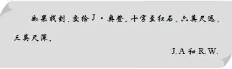

The Picnic
大乔回来时，孩子们正在码头上等着他，但此时再去找布朗宁先生，已经来不及了。
杰西开口说道：“知道吗，大乔？爷爷说过在没有大人陪同的情况下，我们不准在野外生火。现在，我们找到了一个非常好的野餐地点，还想邀请一些朋友来岛上的沙滩，参加我们的野餐会。他们可从来都没见过小岛呢！”
“如果真是这样的话，我倒是很乐意帮你们生火。”大乔说。
“噢，谢谢你，大乔。”杰西说。
四个孩子开始用丹尼尔船长的电话分头邀请各自的朋友。所有被邀请到的朋友都说他们会来。亨利的朋友是一个高大的男孩，名字叫莫里斯·王尔德；而杰西的朋友则是莫里斯的妹妹马乔里；维莉邀请了她的朋友芭芭拉·布莱克，而班尼则出乎大家意料地说他想要邀请迈克·伍德——那个小家伙可是一个惹祸精。
“迈克和班尼可真是绝配啊！”亨利说，“不过我觉得他想邀请谁都可以，我们每个人都是这样。”
“午饭咱们吃杂烩鱼，”杰西说，“我们可以随时去丹尼尔船长那儿要几条鱼来。”
“等大家都到了以后，咱们就去摘蓝莓。”亨利说，“这事可不能忘。”
等到客人们都到了之后，望望兴奋极了。迈克将他那只名叫花花的大白狗也带来了。杰西费了好大的功夫，才没让两只狗打起来。不过，两只狗在互相狂叫了一番之后，倒是成为了好朋友。
“咱们来赛狗吧，班尼。”迈克一刻也坐不住。
两个孩子牵好狗，然后同时放开手。两只小狗似乎都明白主人的意思，它们一路飞奔出去，停在了大乔身旁的沙滩上，喘息着。望望熟悉地形，所以率先跑到了那里。
“是花花先到的！”迈克大声说。
“不是它！”班尼叫道，“它连路都不认识！”
“班尼！班尼！”亨利说，“别野餐还没开始，你们倒先打上了。”
“是望望先到那儿的，你知道的。”班尼说。
“花花就是比望望棒。”迈克反驳道。
“花花一点儿都不比望望棒！”班尼吼了起来，“望望就是比花花快，它先到的！”
“这可是你先找的茬儿，班尼！”迈克说。
“我才没有！”班尼叫道。
“有，你就是有！”迈克喊着。
“现在，你们两个小鬼头听我说，”莫里斯抓住了迈克的手，“你给我住口，否则你就回家去。”
迈克开始上蹿下跳，不料却突然跳到了一块非常锋利的贝壳上面。迈克立刻坐到地上，捧着受伤的脚哭了起来。亨利也坐了下来，看了看迈克的伤，拿出包扎伤口用的工具箱。
“现在别动，迈克，”他说，“你这儿有条长口子，不过不深。我帮你缝上。”
这个伤口倒是帮了大家一个大忙，它让迈克安静了整整一个上午，在这期间，四个年龄稍大的孩子和大乔一起去摘了蓝莓。
中午，杰西和维莉看着大乔生了火，烧了一些开水。亨利和莫里斯切了土豆和洋葱，杂烩鱼很快便做好了。
大家都很喜欢这样的杂烩汤，两个男孩还做了不少，足够晚饭吃的。吃过蓝莓，喝完牛奶后，杰西和维莉在海边洗了碗，而班尼则和迈克慢慢走开了。
“留意一下迈克，亨利。”杰西说。
“我盯着他们呢！他们正坐在那边的岩石上。”亨利说。
不过，等他再看时，两个小孩子已经不见了。
“他们能去哪儿呢？”他大声喊着，飞快地站了起来，“这儿也没地方可躲呀，整片沙滩都在我的视野范围内！”
不过，那两个小家伙确实不见了。亨利赶紧爬上几块岩石，直到听到班尼的说话声，才松了一口气。
“我在想这个瓶子到底是谁留在这儿的。”班尼说道。
亨利和莫里斯看了看岩石下面，见到了一个小小的洞穴。
“你们两个小家伙怎么跑到那儿去了？”亨利问。
班尼抱怨道：“掉下来的石头像门一样挡在洞口，我们好不容易才把它给推开，真是重死了。”
“我说，你们两个小家伙给我爬出来，让我们进去。”莫里斯命令道。两个小孩子照做了，哥哥们爬进去看了一圈。他们看到洞里有一张大大的石桌，上面放着一个旧旧的瓶子。
“咱们把这个瓶子拿出去吧，”亨利说，“里面说不定有什么东西。”
“快看，大乔，”莫里斯说，“看看班尼和迈克都发现了什么。”
“瓶子里有一张纸条，”亨利说，“咱们可以拿出来吗？”
“当然啦！”大乔将瓶子倒了过来，“说不定纸条上面写着名字呢！”
“我用小刀把它弄出来吧！”亨利说。小刀刚好可以从瓶口伸进去，亨利轻而易举地将那张纸条取了出来，念道：

“这肯定是爷爷小时候留下来的，”亨利说，“不过我看不见十字啊。”
“我看见了，”迈克说，“就在那边。”他指了指一块奇怪的石头，它看起来就像是一个十字。
“还有，红石就在那儿！”维莉激动地说，“看！”
“那这事就简单了，”莫里斯说，“你只要在十字和红石之间拉一根绳子就行了。纸上还说什么了？”他又看了看纸条，“六英尺。噢，距离十字六英尺的地方往下挖三英尺深。那儿肯定有什么东西。”
孩子们赶紧将绳子系到了红石上，大家都兴奋不已。大乔给大家指出了六英尺的位置，接着众人开始轮番用勺子挖了起来。在望望和花花的帮助下，他们挖出了一个三英尺深的坑，但里边除了海水，什么都没有。挖了一个小时之后，还是一无所获。
“我们改天再挖吧，”最后，亨利说道，“说不定东西埋在12英尺深的地方呢？这纸条太古老了，上面的数字也看不太清楚。”
除了迈克，所有孩子都累了。一听这话，大家全都开开心心地坐到了草地上。只有迈克依然和花花一起待在沙坑旁边，用勺子继续挖着。突然，他激动地叫了起来。
“是我的，都是我的，是我找到的。你们可不能耍赖，是你们自己不想再挖的。”
孩子们跑到沙坑边，只见迈克正在将一个黑色箱子拖出来，这个箱子上面满是潮湿的沙子。他还在继续叫嚷着：
“是我找到的洞，也是我让班尼帮我推开了门，还是我发现的十字并且把这个盒子给挖了出来，它是我的！”
“别这么多废话。它当然是你的，迈克，”亨利急切地说，“快打开看看吧！”
想要打开盒子并不难，它本身已经十分破旧了。迈克轻轻地将盒盖掀开，孩子们看到一沓旧钞票。迈克一张一张地将那些纸币摊开放在盒盖上。
“五美元！”莫里斯说，“好大一笔钱啊，迈克！”
“爷爷会给他一张五美元的新钞票的，”杰西说，“爷爷肯定想留着他小时候藏到盒子里的旧钞票。你不想要一张崭新的五美元钞票吗，迈克？”
“想！想！当然想！”迈克说。他长这么大，连一美元都没见过呢！
正在这时，孩子们听到海面上传来了喊叫声。接着，他们看到一个孩子正站在一只划艇上，指着水面叫喊着什么。
一个黑色的脑袋露出了水面，然后又消失了。
“有人落水了！”莫里斯惊呼道。
亨利听到大乔自言自语道：“我现在已经恢复了，我不害怕。”
大乔脱下鞋子，纵身跳进了水中，飞快地游了起来。“把船划到这边来！”他冲船上的男孩喊道。
不过那只船却径直从他身旁漂过去了。
“噢，快回来，大乔！”班尼喊道。
“他会回来的，没事儿，”莫里斯说，“他是个游泳高手！看！”
莫里斯话音未落，只见大乔突然潜入水中。等到他再次浮出水面时，已经推着落水的孩子朝划艇游了过去。就这样过了好久，大乔终于把溺水的男孩拖上小船，紧接着自己也爬了上去。
“大乔太棒了！”亨利说，“希望他救得及时。”
“每个人都该学学游泳的，”莫里斯说，“刚才船上的男孩被吓破胆了，只知道站在那儿大喊大叫，连大乔叫他把船划过去他都做不到。”
在这期间，迈克一直没有说话。他只是呆呆地站在那儿，看着水面。这小家伙似乎一时间变成了一尊石像。
“你怎么吓成这样了？”亨利不解地问道。
“我猜落水的是帕特。”迈克神色恍惚地说，他依然目不转睛地盯着小船。
“帕特是谁？”亨利问。
“是我哥哥，”迈克说，“他11岁了。我想水里的那个就是他。”
“你看不了那么远的，”莫里斯说，“迈克，你怎么能肯定是他？”
“我告诉过他野餐会有好吃的，还说我们可以打球。”
“我有点明白了，”亨利看着莫里斯，“那你知道另外一个男孩是谁吗？”
“也许是强尼，”迈克答道，“我也跟强尼说了，而且他知道在哪儿能弄到船。”
“他们怎么弄到船的？”莫里斯问。
“谁知道呢！”迈克说。
“瞧他们都干了些什么！”亨利说，“既不会游泳，也不会划船，就敢出海。”
大乔划着船逐渐靠近小岛。两个男孩一个躺在船舱里，另外一个则坐在船尾。看到小船过来，杰西对马乔里喊道：“咱们到马厩去拿一些毯子和毛巾过来吧。”
“你真善解人意，杰西！”大乔看到两个女孩拿来毯子时不禁赞道，“把它们铺在火堆旁。”杰西和马乔里铺好了毯子，而亨利和莫里斯则在小船靠岸时抓住了缆绳。
“真的是帕特？”迈克吓坏了。
“是的，”强尼回答道，“不过这个人说他没事。”
“算他走运，”亨利说，“幸好碰到了会游泳的大乔。”
帕特躺在船里一动不动，另外几个男孩帮着大乔把他抬出来，裹上毯子，放在火堆旁。
“咱们现在还不能跟他说话，”大乔一边用毛巾帮那孩子擦头发，一边说，“让他先睡一会儿，他累坏了！”
“我想你们也不用再训他了，”强尼此时已经脸色苍白，“我们再也不敢随随便便开船出海了。”
“相信你们不会了。”大乔转身回小屋去换衣服了。
这时，迈克说：“帕特还没吃饭呢，你能给他热一点杂烩鱼么，亨利？”
“他睡得这么香，怎么可能起来吃饭呢？”莫里斯说。
“对，可是他一闻到杂烩鱼的味道就会醒过来的。”迈克说，“说不定我也可以再吃一点，我中午没怎么吃饱。”
“呵，我真不知道该怎么说你！”莫里斯打趣道，“对，你只吃了三大碗！”
“我来告诉你们怎么办吧，”大乔这时已经换好干净衣服回来了，“要是迈克只想吃东西而不想玩的话，咱们几个刚好可以玩球。”
“噢，我想玩！我想玩！”迈克叫着跳了起来，完全忘记了脚上的伤口。
就这样，孩子们开始玩起了球。之后，大家又吃了一些杂烩鱼。果不其然，一闻到食物的香味，帕特立刻醒了过来。
“这是我吃过的最好的野餐啦！”迈克说着，又将碗递了过去。
“嘿，住手！”大乔警告道，“别再给他了，亨利。像他这么大的孩子，一天吃六大碗已经够多了。”
正在这时，丹尼尔船长驾船来接孩子们回家了。看到好朋友要离开，班尼禁不住放声大哭起来。
“哭什么呢，班尼？”迈克问，“我就从来不哭。”
于是当客人们登船回家时，真的没有人再哭了。等到迈克确定自己再也听不到班尼的回应之后，他将手举到嘴边，喊了起来：“花花就是比望望跑得快。”
“好啦，班尼，你也别放在心上，”亨利说，“这一天平安无事就已经很不错啦。”
“说得没错，”大乔说，“这到底是怎样的一天呀！”
直到这时，亨利才开始疑惑，之前大乔救人前为什么要说自己“已经恢复了”？当亨利把疑问说给杰西听时，她也觉得很奇怪。